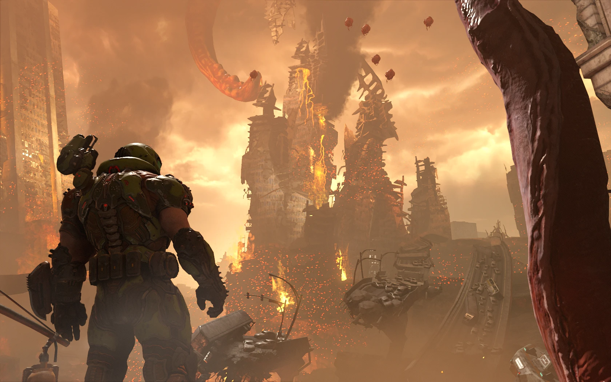
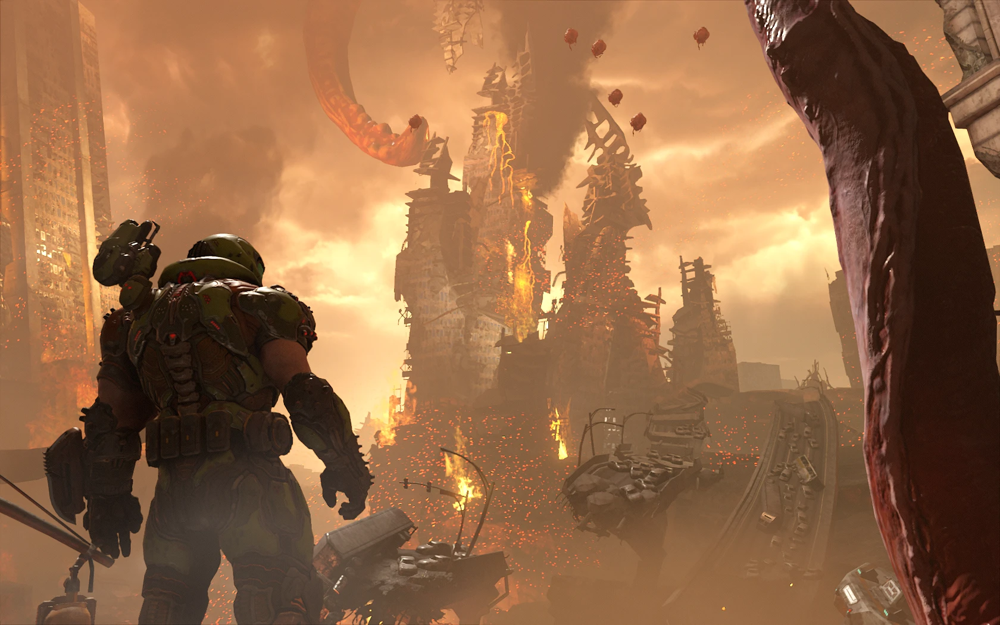

DOOM ETERNAL
Компьютерная игра в жанре шутера от первого лица. Игра разработана студией ID SOFTWARE, а издателем выступила компания BETHESDA SOFTWORKS, Анонс проекта состоялся в 2018 году на выставке E3.
DOOM ETERNAL вышла на платформах Windows, PlayStation 4 и Xbox One и в сервисе Google Stadia в марте 2020 года, в декабре — на Nintendo Switch, а в июне 2021 года — на PlayStation 5 и Xbox Series X/S.
DOOM ETERNAL является частью серии игр DOOM и прямым сиквелом компьютерной игры DOOM 4 2016 года, в рамках сюжетной кампании игрок вновь берет на себя роль ПАЛАЧА РОКА, а события игры разворачиваются спустя два года после событий, произошедших на Марсе.
Палач должен остановить Культ Деаг, который вместе с перешедшей на сторону Ада Объединённой Аэрокосмической Корпорацией собираются уничтожить человечество.
Игра была тепло встречена после анонса и получила положительные отзывы от критиков на момент выхода — большинство авторов игровых изданий похвалили игру за игровой процесс и музыкальное сопровождение, однако их мнения разошлись насчет секций уровней с платформингом и многопользовательского режима.
После релиза ETERNAL стала коммерческим успехом: по данным издателя доход игры в первую неделю был выше, чем у всех прошлых игр серии, одновременное максимальное количество игроков в сервисе STEAM увеличилось вдвое по сравнению с прошлой основной игрой, а доход игры к концу 2020 года по данным различных источников составил около 450 миллионов долларов.
Как и в случае с DOOM 2016 года в качестве руководителя проекта выступил Хьюго Мартин , продюсера — Марти Стрэттон, Композитором игры вновь стал Мик Гордон .
В игровой процесс по сравнению с игрой 2016 года были внесены некоторые изменения: передвижение персонажа было дополнено механикой дэша, из арсенала был убран пистолет, но добавлены меч Горнило, второй тип гранат, огнемёт и кровавый удар, а функциональность супердробовика была дополнена крюком, позволяющим притягиваться к противникам.
Вместо привычных для серии многопользовательских режимов в Eternal представлен асимметричный режим для трёх игроков, где один из них берёт на себя роль ПАЛАЧА, а два других — сильных рядовых противников

ИГРОВОЙ ПРОЦЕСС
ОДНОПОЛЬЗОВАТЕЛЬСКИЙ РЕЖИМ
DOOM ETERNAL является игрой в жанре шутера от первого лица, Игрок берёт на себя роль ПАЛАЧА РОКА, древнего демоноборца, игра разделена на разные уровни, дизайн которых сочетает в себе научно-фантастическую и фэнтезийную тематику.
Помимо стандартной механики перемещения по уровню, игрок может карабкаться по некоторым стенам, делать рывки в стороны, притягиваться к противникам с помощью крюка.
На уровнях также присутствуют различные предметы, такие как аптечки, патроны, броня, улучшения оружия и коллекционные предметы, которые представлены музыкальными композициями из прошлых игр ID SOFTWARE и игр серии DOOM, виртуальнымиколлекционными фигурками ,чит-кодами и различными текстовыми заметками, которые посвящены внутриигровой вселенной игры.
Между прохождением отдельных миссий игрок может свободно исследовать локацию-хаб, в которой он может взаимодействовать с собранными коллекционными предметами, разблокировать награды, испытать оружие и новые тактики на тренировочной арене, а также выбрать уровень для повторного прохождения.
Как и в прошлых играх серии, перед началом игры пользователю дается выбор из четырёх уровней сложности.
Вигре представлен широкий выбор вооружения, различные виды оружия используют разные виды боеприпасов, оружие в игре можно модифицировать: большая часть оружия имеет две переключаемые между собой активные модификации, которые предлагают режимы альтернативного огня.
В свою очередь модификации оружия также могут быть улучшены за счёт навыков.
У персонажа имеются запасы здоровья и брони, которые убывают при получении урона. Как и в Doom 2016 года, патроны, здоровье и броня могут быть подобраны на уровнях или получены при убийстве противников: делая зрелищное добивание ослабленных врагов персонаж получает очки здоровья, поджигая огнемётом — броню, а убивая с помощью бензопилы — патроны.
Броня и встроенное в неё вооружение, как и оружия могут быть модифицированы.
В дополнение к упомянутым модификациям игрок может разблокировать 9 рун, которые предоставляют различные пассивные навыки, незначительно влияющие на игровой процесс, например позволяя выполнять зрелищные добивания с большего расстояния или получать очки здоровья из противников убитых Кровавым ударом.
Одновременно могут быть выбраны только 3 из них, но игрок может в любой момент времени переключаться между любыми разблокированным рунами.
При прохождении уровней игрок может найти дополнительные жизни , которые при смерти персонажа позволяют мгновенно продолжить прохождение игры с места смерти и без сброса прогресса.
Как и в прошлых частях, протагонисту противостоят различные виды демонов-противников.
Враги могут использовать разнообразные атаки ближнего и дальнего боя, которые наносят различный урон главному герою, демоны имеют разное количество здоровья, могут уворачиваться от атак игрока, взбираться на различные препятствия, летать и так далее.
В игре присутствуют читы-модификаторы, которые могут быть найдены на уровнях в качестве коллекционных предметов, они позволяют переиграть уже пройденные уровни с дополнительными особенностями и не влияют на прогресс основного прохождения.
Ещё одной дополнительной опцией являются Мастер-уровни, которые представляют собой усложненные версии уровней из сюжетной кампании игры, также в игре доступен режим Дополнительная жизнь, в котором, как и при обычном прохождении, можно выбрать один из представленных уровней сложности и в котором при смерти персонажа и отсутствии у него дополнительных жизней весь прогресс прохождения сюжетной кампании утрачивается.
МНОГОПОЛЬЗОВАТЕЛЬСКИЙ РЕЖИМ
Вматче многопользовательского режима принимают участие три игрока: один из них берёт на себя роль Палача Рока, а два других — сильных рядовых демонов, таких как Мародёр,Манкубус,Элементаль Боли и так далее, игровой процесс за Палача аналогичен игровому процессу однопользовательского режима, а условием победы в раунде является уничтожение за определённый промежуток времени обоих противников.
Всвою очередь демоны могут атаковать противника с помощью обычных атак дальнего боя, а также использовать активные способности, которые позволяют временно блокировать получение Палачом патронов, брони и очков здоровья, призывать других демонов, устанавливать барьеры, излечивать себя и товарища по команде и так далее, у каждого демона доступно по 4 активных способности, при этом если один из демонов был уничтожен, то он может быть воскрешён, если второй демон не будет уничтожен Палачом в течение определённого промежутка времени.
Целью обоих демонов является уничтожение Палача , помимо демонов, управляемых игроками, Палачу также противостоят демоны под управлением искусственного интеллекта, после каждого раунда, всем игрокам дается возможность выбрать улучшение способности или какого-либо показателя, например, количества здоровья, матч длится пока одна из сторон не победит в трёх раундах.
 

Сюжет
Основная кампания
Сюжетная кампания Doom Eternal продолжает сюжет игры Doom 2016 года, два года спустя после событий, произошедших на Марсе, Земля почти полностью захвачена демоническими силами, а людские потери исчисляются миллиардами, за это время Палач Рока завладевает космической крепостью, которую он использует как собственный штаб, на момент событий игры Палач планирует уничтожение Культа Деаг — трёх жрецов, которые руководят вторжением демонов на Землю: Деага Нилокса , Деага Ранака и Деага Грава .
Первым он выслеживает Нилокса, который находится в Адской Барже; добравшись до Нилокса, Палач отрубает ему голову, главный герой использует голову жреца, чтобы попасть на собрание культа и запугать оставшихся его членов, которые заявляют, что все люди за свои деяния должны быть принесены в жертву Кан Созидательнице — лидеру могущественной расы Творцов, опасаясь за жизни Деагов, Кан Созидательница телепортирует их в неизвестные локации и предупреждает Палача о последствиях его действий.
Чтобы найти второго жреца, Палач находит Небесный Локатор, впоследствии заряжает Локатор у Предателя — представителя расы Аргент Д’Нур, который предал свой народ в обмен на жизнь своего сына, но был обманут, предатель предупреждает Палача , что противостоять Кан опасно, но при этом просит его о помощи, принеся локатор в свой штаб, Палач определяет местоположение второго жреца — База Сектантов на севере Земли, где закрепились перешедшие на сторону Ада сотрудники ОАК, Герой проникает на базу, уничтожает множество демонов, добирается до Ранака и казнит его.
Чтобы найти третьего жреца, Палачу нужно найти Сэмюэля Хайдена, киборга и бывшего председателя совета директоров ОАК , который после событий прошлой игры переместился на Землю и возглавил Коалицию, прорвавшись через орды демонов, Палач находит Хайдена , но тот успел получить значительные повреждения в сражении с демонами, а на базу Коалиции проникает сильный демон — Мародёр, поэтому Палач телепортирует тело Хайдена к себе в крепость, а сам в бою уничтожает нового противника.
На базе протагонист подключает киборга к аппаратуре крепости и узнает от него, что последний жрец прячется в Твердыне Стражей в мире Аргент Д’Нур, добраться туда можно только через врата древнего марсианского города Гебет, который находится внутри планеты, Палач прибывает на спутник Марса Фобос, с помощью огромной пушки BFG 10000 вскрывает кору Марса и в спасательной шлюпке добирается до города, когда Палач попадает в Твердыню Стражей, игроку показывают несколько его воспоминаний: в одном из них выясняется, что Думгай, протагонист Doom, Doom 2 и Doom 64, после событий последней попал в мир Аргент Д’Нур и является тем же персонажем, что и Палач Рока, добравшись до арены, Палач в бою уничтожает демона Гладиатора, который защищал Деага Грава, а следом и самого жреца.
Потеряв всех трёх жрецов и лишившись возможности уничтожить человечество, Кан Созидательница решает прибегнуть к другому плану и приступает к пробуждению Иконы Греха, теперь герою нужно помешать планам Кан, но для этого ему нужно проникнуть в Урдак — мир расы Творцов, единственный портал в который находится в Некраволе — огромном строении в Аду, которое производит аргент-энергию, пробиваясь через орды демонов, Палач узнает, что аргент-энергия производится из человеческих душ, а также является главной причиной успеха Творцов.
Добравшись до вершины Некравола, герой открывает портал в Урдак, там герой наблюдает, как Кан пытается, используя сердце сына Предателя, взять под свой контроль Икону Греха, Палач вмешивается в ритуал и уничтожает сердце, тем самым выполнив просьбу Предателя, Икона Греха выходит из под контроля и через портал проходит на Землю, Палач вынужден последовать за ней, но путь ему преграждает Кан, в ходе сражения Палач побеждает Кан Созидательницу, а после телепортируется на Землю, там он находит Икону Греха и в поединке с ней сначала уничтожает её броню, а потом и её саму, Уничтожение Иконы ознаменовывает конец вторжения и победу человеческой расы над демонами.
The Ancient Gods – Part One
Дополнение для компьютерной игры Doom Eternal, как и основная игра, дополнение было разработано id Software и издано Bethesda Softworks.
Несмотря на то, что Палач Рока победил Икону Греха и остановил вторжение Ада на Землю, его победа не далась даром, смерть Кан Созидательницы и завоевание Адом Урдака дали демонам шанс доминировать во всех измерениях, дабы возобновить свое вторжение на Землю, чтобы предотвратить это, Палач вместе с Сэмюэлем Хайденом и учеными из Комитета отправляется на поиски и освобождение Творца Самура, Палач отправляется на объект UAC Atlantica, где находится капсула с Самуром, он загружает Хайдена в капсулу, и выясняется, что он и Самур — одно и то же.
Самур поручает Палачу Рока вернуть Сферу жизни Всеотца из Кровавых Болот , на которых расположено Святилище Ингмора, чтобы вернуть его в физическую форму, пробившись через Кровавые Болота и пройдя Испытание Малигога, Палач находит сферу Всеотца, Однако он предпочитает уничтожить её, а не передать Самуру, и вместо этого извлекает Сферу Жизни Давота с намерением воскресить, а затем и уничтожить его физически, что, в свою очередь, уничтожит всех демонов за пределами Ада.
Палач Рока возвращается в Урдак, оскверненный нашестивием демонов, и достигает Люминариума, где любой, у кого есть Сфера Жизни, может активировать её, однако Палач сталкивается с Самуром, поглощенным его же собственным дегенеративным преобразованием, и почти побеждает его, прежде чем его телепортирует Всеотец, несмотря на предупреждение о том, что воскрешение Давота в физическую форму будут иметь неприятные последствия, Палач воскрешает его и обнаруживает, что Темный Владыка — это он сам, только из Ада.
The Ancient Gods – Part Two
Возродив Темного Владыку, Палач Рока пытается убить его, но терпит неудачу, поскольку в Люминариуме нельзя проливать кровь, Темный Владыка говорит Палачу, что он будет ждать его в последней битве в столице Ада, Имморе, после чего уходит в открывшийся портал.
Чтобы добраться до Имморы, Всеотец сообщает Палачу, что он должен активировать Небесные Врата, единственный портал, способный достичь города, всеотец отправляет Палача Рока в Аргент Д'нур, чтобы забрать Призрачный Кристалл, который необходим для питания портала, Палач направляется к месту расположения кристалла внутри Копья Мира, массивного космического корабля пришельцев, зародивших жизнь на Аргент Д'нур, который давно приземлился на планете, протаранив её поверхность насквозь от полюса до полюса, по пути герой встречает Предателя, который после поражения Иконы Греха вновь принял свое первоначальное имя Вален, он отдает Палачу Рока питающийся от аргент-энергии Молот Стражей, чтобы заменить его потерянное Горнило, Палач зажигает Факел Королей, чтобы сплотить оставшиеся непорочные силы Стражей, а затем входит в Копье Мира и забирает Призрачный Кристалл.
С Кристаллом Палач возвращается на Землю, постепенно оправляющуюся от последствий адского вторжения, где находит Небесные Врата и активирует их, оказавшись у стен Имморы , герой встречает грозную оборону города, состоящую из многочисленной армии демонов, однако ему, через порталы, приходит на помощь призванная Факелом Королей армия Стражей во главе с Валеном, пока главные силы Ада заняты ими, Палач прорывается за стену и попадает на территорию столицы ада, продвигаясь по следу Темного Владыки к его святилищу.
На арене святилища Давот и Палач вступают в поединок, в процессе Темный Владыка ведает Палачу, что именно он был настоящим первым богом и что Джеккад был первым измерением, созданные им Творцы, включая Всеотца, предали его и переписали историю, чтобы выставить Всеотца как создателя Вселенной, что, в свою очередь, привело к тому, что разъяренный Давот повлиял на Творца Самура, чтобы он превратил Думгая в Палача Рока, первоначальной целью которого было способствовать уничтожению Творцов и Всеотца, чтобы осуществить месть Давота, Палач рока убивает Темного Владыку ударом наручного клинка в грудь, впервые заговорив за долгие годы, Со смертью Давота все демоны за пределами ада мгновенно уничтожаются, и Земля окончательно освобождается от демонического вторжения, Оказавшись также одним из творений Давота, Палач Рока падает без сознания, прежде чем Творцы запечатывают его в каменном саркофаге в Святилище Ингмора, на этом история Палача Рока заканчивается.